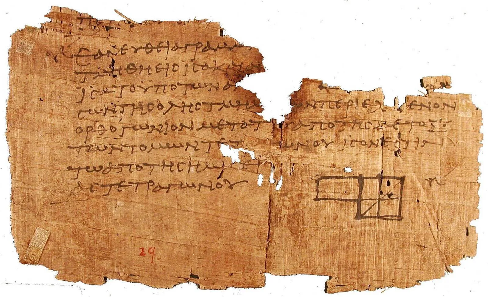

Eigencircuits is an arXiv that publishes only nonsense. It has the math archive's subject listings, a search box, abstract pages with submission histories and MSC classes, full text in HTML, downloadable TeX source, and a View PDF link that produces a properly typeset paper. Between thirty and fifty new papers appear every day. Each one locks to a single mathematical subfield and carries a title, authors with affiliations and matching email domains, an abstract, sections of definitions, lemmas, theorems and proofs, displayed equations, acknowledgments, and a bibliography. The papers are well-formed and internally consistent, and they mean nothing. It is a descendant of SCIgen, which I have covered before: Papermaker generates CS papers from SCIgen's original context-free grammar, while eigencircuits is a new engine aimed at mathematics.
A grammar that remembers
A context-free grammar has no memory. Every expansion is independent, so a paper that opens about elliptic curves can drift into talking about Banach spaces by section three, and nothing in the formalism prevents it. Real mathematics papers are monomaniacal: they introduce one object in the abstract and pursue it to the last proof.
So the engine binds a paper's identity before producing any text. At paper scope it fixes a central object, two adjectives for it, a method, a related named result, and an invariant, and the grammar reads those bindings back everywhere via ref nodes. A symbol allocator assigns the central object a letter from the subfield's preferred pool, so the \(E\) in the abstract is the same \(E\) in every equation, and two distinct objects never share a symbol. Productions are weighted rather than uniform, each choice node refuses to repeat whatever it produced last time, each word bank keeps a recency window of six draws, and a depth budget forces recursive rules to bottom out. The result reads like one paper instead of a bag of sentences.

{kind=link}
Thirty-two subject classes
Every paper is drawn from one of thirty-two lexicons, one for every arXiv math subject class. A lexicon is pure data: eight word banks (objects, properties, ambient spaces, maps, invariants, named results, methods, and glosses), a pool of symbols, MSC 2020 codes, and adjacent categories for the occasional cross-listing. Across all fields that comes to about 6,400 vocabulary terms plus 1,020 inline and 575 displayed formula templates, written as real LaTeX with sentinel tokens: XSYM is replaced by the paper's main symbol, and numeric tokens are randomized per draw so the same template reads differently from paper to paper.
The formulas are authentic to each field. A number theory paper can state the Hasse bound \(\lvert a_p \rvert \le 2\sqrt{p}\) inline, or display a functional equation like \[\Lambda(s,\chi) = \varepsilon(\chi)\,\Lambda(1-s,\bar\chi).\] The details run deep: the number theory symbol pool deliberately excludes \(p\) (it would collide with the prime index in \(T_p\) and \(a_p\)) and \(N\) (counting functions), and banks stay lowercase and article-free so the grammar can supply its own capitalization and pick a or an by how a symbol is spoken, giving "an \(X\)" but "a \(K\)".
The shape of a paper
Document structure lives in Python, not the grammar. Each paper draws a house style: a length class (a short note gets two or three core sections, a long paper up to eight), theorem numbering per section or per document, alphabetic or numeric citation labels, and Title Case or sentence case. Section headings are planned up front so the introduction's "The paper is organized as follows" outline is accurate, and the bibliography of 12 to 25 entries is built before the body so proofs can cite labels that actually exist. Alphabetic keys are derived from author surnames and year with disambiguating suffixes, and fabricated arXiv identifiers only appear from 2007 onward, because the YYMM.NNNNN scheme did not exist before that.
Proofs are two to five steps assembled from connectives, appeals to named results, and citations, with two constraints that took real papers to notice. A theorem's proof is generated before the theorem is registered as citable, so no proof cites the statement it is proving; later proofs can say "Combining Theorem 1.1 and (3.2)" against results that genuinely precede them. And a proof is re-rolled if its final step opens with a promissory clause like "It remains to verify that", because a proof cannot end by announcing more work. Acknowledgments thank a random mathematician, and funding lines use each agency's real grant format, down to NSF DMS numbers and EPSRC EP codes.

{kind=link}
A corpus without a database
Every visitor sees the same papers. An identifier like eiGen:2607.00427 is hashed with CRC32 to obtain a 32-bit seed and, through a weighted draw, a subject class, and the engine regenerates the identical paper on demand. The engine consumes randomness only through a seeded PRNG (a Python port of mulberry32), so a seed reproduces a paper exactly and links are permanent within the archive window.
The set of papers that exists is a pure function of the current date: each day contributes 30 to 50 papers with stable per-month sequence numbers, over a rolling 90-day window of a few thousand papers. A new batch appears automatically every day with no storage anywhere. Listings and search need only front matter, and generating a full paper per row would be about 25 times slower, so a second entry point replays the RNG in exactly the same order as full generation but stops after the title, abstract, and authors, guaranteeing that what the listing shows matches the paper behind it. The comments line on each abstract page ("14 pages, 5 figures") is invented from the same hash; the papers contain no figures.
Python on a Cloudflare Worker
The engine is pure Python, and it runs in production as a Python Worker on Cloudflare Workers, executing under Pyodide with the package vendored next to the Worker entry point at deploy time. The Worker is the single origin: it answers the JSON API (/generate, /archive, /list, /search, /abs) and hands everything else to a static-asset binding serving the React SPA. Since a seeded paper is immutable, those responses are cached for a year; the date-dependent listings revalidate every five minutes.
pdfTeX in the browser
Papermaker shipped its LaTeX to a remote compilation service. Eigencircuits compiles locally: View PDF feeds the generated amsart source to SwiftLaTeX's pdfTeX build, a real TeX engine compiled to WebAssembly running in a Web Worker. The engine fetches packages and fonts on demand from a self-hosted TeX Live subset, 367 harvested files totaling about 22 MB, served from the same origin so there is no third-party runtime dependency. One deployment quirk: a missing TeX file would normally fall through to the SPA's index.html, and pdfTeX would happily ingest HTML as a font file, so the Worker detects that fallback and converts it into a status the engine treats as file-not-found. A single compile pass suffices because citations and cross-references are baked into the text as literal labels rather than \ref and \cite commands, and the engine prewarms in the background when you hover over the View PDF link.
The grammar is not allowed to drift into emitting LaTeX that does not build. CI generates a paper for every one of the 32 subject classes at three fixed seeds and compiles all 96 with pdflatex; any grammar change that produces uncompilable output fails the build.